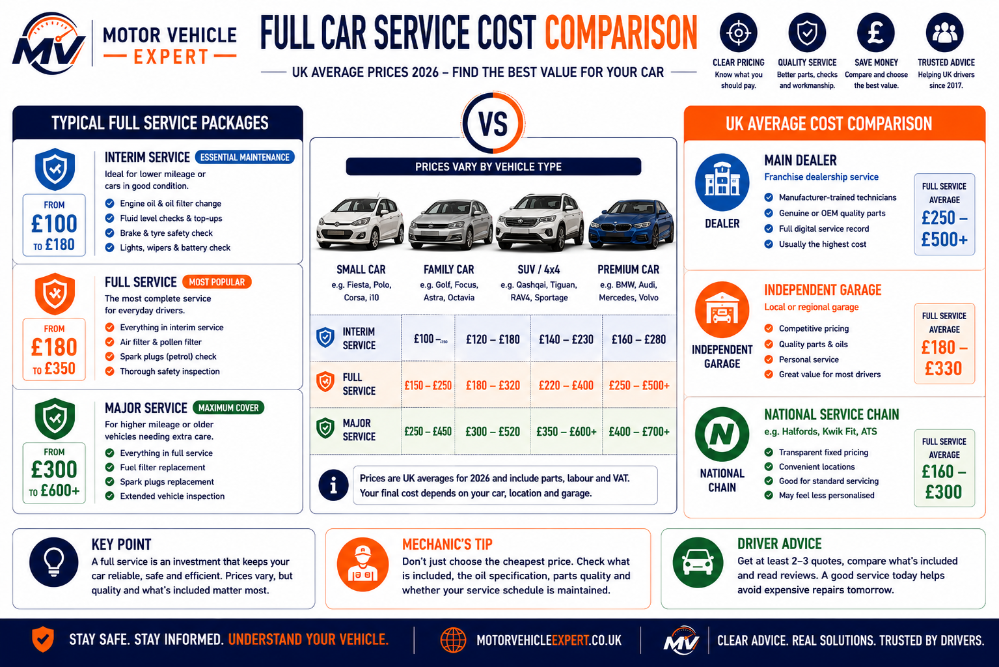
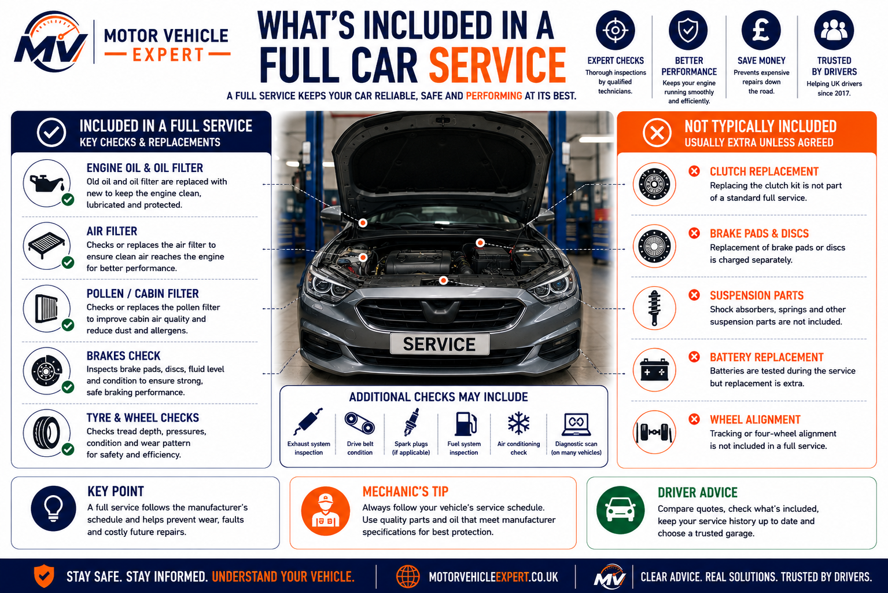
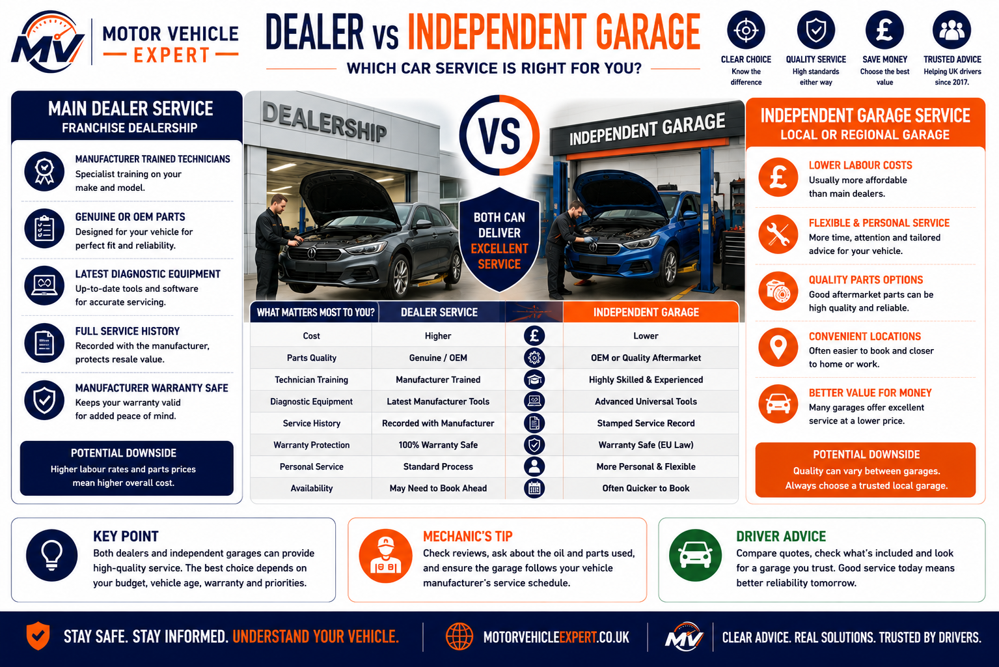
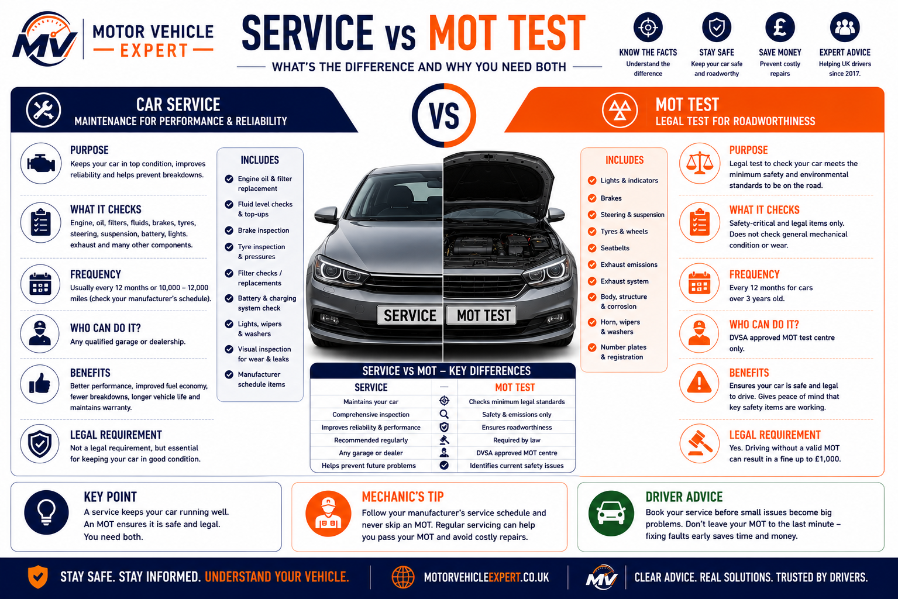

How much is a full car service in the UK?
A full car service in the UK usually costs around £180 to £350 for many everyday vehicles at independent garages. Smaller petrol cars can cost less, while larger diesels, SUVs, hybrids, performance cars and premium models can cost more.
Most Everyday Cars
A normal full service at a good independent garage usually sits in this range.
£180–£350Diesel, SUV & Premium Cars
Larger oil capacity, specialist filters, manufacturer oil and labour time can increase the price.
£250–£600+Very Cheap Quotes
A cheap quote may exclude filters, VAT, correct oil specification or proper inspection checks.
Check details firstDo not compare service prices by the headline number only. Compare oil grade, filters included, VAT, parts quality, service record, inspection checklist and whether extra repairs require your approval first.
Typical full car service cost in the UK
These are broad UK guide prices only. The final bill depends on the vehicle, garage labour rate, oil specification, filter package, service schedule and whether additional service items are due.
Small Petrol Car
Usually cheaper because oil capacity, filters and labour time are often lower.
£150–£250Family Hatchback
A typical UK full service price for many everyday petrol and small diesel cars.
£180–£320SUV Or Larger Car
Larger vehicles often need more oil, bigger filters and more inspection time.
£220–£400Diesel Car
Diesel servicing may include low-ash oil, fuel filter checks and emissions-system inspection.
£220–£450+Premium Car
Main dealer labour, digital service records and manufacturer-specific parts can increase the bill.
£300–£600+Performance Car
Specialist oil, spark plugs, performance filters and longer labour time can push costs much higher.
£400–£900+
The cheapest quote is not always the best value. A proper quote should make clear which oil, filters, inspections and records are included.
Full car service cost reference table
Use this table as a quick comparison when checking quotes. Prices vary by region, vehicle type, parts quality and whether the garage is independent, specialist or main dealer.
| Vehicle Type | Typical UK Cost | Why The Price Varies |
|---|---|---|
| Small petrol car | £150–£250 | Lower oil capacity, simpler filters and shorter labour time. |
| Family hatchback | £180–£320 | Most common full service range for everyday UK cars. |
| SUV or larger car | £220–£400 | More oil, larger filters, bigger tyres and longer inspection time. |
| Diesel car | £220–£450+ | Low-ash oil, fuel filter, DPF/EGR checks and emissions-related components. |
| Premium car | £300–£600+ | Main dealer labour, digital service history and manufacturer-specific procedures. |
| Performance car | £400–£900+ | Specialist oil, plugs, filters, performance parts and longer labour times. |
Brake pads, brake discs, tyres, batteries, coolant leaks, suspension repairs and warning light diagnosis are normally charged separately from the full service price.
For wider ownership budgeting, see our car repair costs guide UK.
What is usually included in a full car service?
A proper full service is far more comprehensive than a simple oil change. While every manufacturer has its own maintenance schedule, most reputable UK garages include fresh engine oil, new filters, fluid inspections, brake and tyre checks, battery testing and a detailed safety inspection. Always ask exactly what is included before comparing quotes.
Oil & Filter Service
Fresh engine oil and a new oil filter are the foundation of every full service and help protect the engine against wear.
Safety Checks
Brakes, tyres, steering, suspension, lights, battery, wipers and other safety-critical components should all be inspected.
Fluid & Filter Checks
Coolant, brake fluid, washer fluid, air filters and cabin filters are inspected or replaced according to the manufacturer's schedule.

Always compare the actual checklist rather than the advertised price. A cheaper service may exclude important filters, inspections or manufacturer-specified maintenance items.
- ✓Engine oil: Replace using the correct manufacturer-approved oil specification.
- ✓Oil filter: Replace with a quality filter to protect the engine.
- ✓Air filter: Inspect or replace if due.
- ✓Cabin (pollen) filter: Inspect or replace depending on service schedule.
- ✓Fluid levels: Coolant, brake fluid, washer fluid and power steering fluid where applicable.
- ✓Brake inspection: Brake pads, discs, pipes, hoses and visible brake fluid condition.
- ✓Tyres: Tread depth, tyre pressures and general condition.
- ✓Electrical checks: Lights, horn, battery condition and charging system where included.
- ✓Visibility: Wipers, washers and mirrors.
- ✓Vehicle inspection: Leaks, corrosion, suspension, steering and other visible safety concerns.
What should a quality garage include?
The table below summarises the maintenance items most UK drivers should expect during a proper full service. Exact requirements vary between manufacturers and service schedules.
| Service Item | Normally Included? | Purpose |
|---|---|---|
| Engine oil | Yes | Lubricates and protects internal engine components. |
| Oil filter | Yes | Removes contaminants from the engine oil. |
| Air filter | Usually | Maintains clean airflow to the engine. |
| Cabin filter | Often | Improves interior air quality and heater performance. |
| Brake inspection | Yes | Checks braking components for wear and safety. |
| Tyre inspection | Yes | Checks tread depth, pressure and condition. |
| Fluid checks | Yes | Confirms safe operating levels and identifies leaks. |
| Battery check | Often | Assesses battery health and charging performance. |
| Vehicle inspection | Yes | Identifies visible wear, corrosion and developing faults. |
A genuine full service should take time. If a garage advertises an extremely cheap service completed in under an hour, ask exactly which filters, inspections and service record updates are included before booking.
For a broader overview of maintenance schedules and servicing intervals, read our UK car servicing guide.
What affects the bill in real life?
Two garages can advertise a “full service” at very different prices because the actual work, oil specification, filter package, labour rate and service record requirements may not be the same. This is why comparing the checklist is more important than comparing the headline price alone.
Oil Type
Correct manufacturer-approved oil can cost more, especially on modern diesel, turbocharged, hybrid and premium vehicles.
Filter Package
Some quotes include only oil and oil filter, while better services may include air, cabin, pollen or fuel filters where due.
Labour Rate
Main dealers, specialists and city garages often charge more per hour than many independent local garages.
Digital Service History
Some newer cars need digital service records updated correctly to protect resale value and prove maintenance.
Access Time
Some engine layouts make filters, plugs, undertrays or drain points harder to access, increasing labour time.
Additional Repairs
Brakes, tyres, coolant leaks, batteries, suspension wear and warning light diagnosis are normally charged separately.
When comparing two service quotes, ask both garages to list the oil grade, filters included, VAT, labour, service record update and whether they will contact you before carrying out extra repairs.
What affects the cost of a full service?
Full service prices vary because not every car needs the same oil, filters, labour time or scheduled maintenance items. A proper quote should explain exactly what is included and why your vehicle costs more or less than a basic advertised price.
1. Engine Oil Specification
Some cars require expensive low-ash, fully synthetic or manufacturer-approved oil, especially modern diesel, turbocharged and premium vehicles.
2. Oil Quantity
Larger engines often need more litres of oil, which increases the parts cost even before labour is added.
3. Filters Included
Oil, air, cabin, pollen and fuel filters can change the price significantly depending on what the quote includes.
4. Labour Rate
Main dealers, specialists and city garages usually charge more per hour than many independent local garages.
5. Vehicle Access
Some cars take longer because filters, spark plugs, undertrays or drain points are harder to reach.
6. Extra Service Items
Spark plugs, brake fluid, fuel filters, gearbox oil or coolant changes may be due separately from the basic full service.
7. UK Location
Labour rates vary across the UK, with city garages and main dealers often charging more than smaller local independents.
8. Service History Requirements
Newer cars may need digital service record updates, approved parts or manufacturer-specific checks to protect resale value.
If a quote looks unusually cheap, ask whether it includes the correct oil specification, all required filters, VAT, service record update and a proper inspection checklist.
Main dealer vs independent garage
Where you have your car serviced can affect the price, service history, manufacturer updates and long-term ownership costs. There is no single right answer for every vehicle, but understanding the strengths of each option helps you choose the best value rather than simply the lowest price.
Main Dealer Service
Often the most expensive option but can be worthwhile for newer vehicles, manufacturer warranties, software updates and digital service records.
Independent Garage
Usually offers excellent value provided the garage uses the correct oil, quality parts and follows the manufacturer's servicing schedule.
Specialist Garage
Ideal for premium, performance, hybrid, diesel and marque-specific vehicles requiring specialist knowledge and equipment.
Fast-Fit Centre
Convenient for routine servicing, but always check exactly what is included before comparing prices.

Choosing the right garage depends on your vehicle, budget, warranty status and the level of specialist knowledge required.
Which servicing option is right for you?
The table below compares the four most common servicing options available to UK drivers.
| Garage Type | Typical Cost | Best For |
|---|---|---|
| Main dealer | Highest | Newer cars, manufacturer warranty, digital service history and software updates. |
| Independent garage | Lower | Excellent value for most everyday vehicles outside warranty. |
| Specialist garage | Medium–High | Premium, hybrid, diesel and performance vehicles requiring specialist expertise. |
| Fast-fit centre | Usually lower | Routine servicing and convenience, provided the service specification is suitable. |
A good independent garage can often provide servicing that matches manufacturer standards at a lower cost than a main dealer. Always ask for an itemised invoice showing the oil specification, filters fitted and all work completed.
Whichever garage you choose, keep every invoice and service record. A complete maintenance history can improve resale value and reassure future buyers. For more advice, read used car with no service history — is it worth it?.
Full service vs interim service vs major service
Interim, full and major services are not the same. Each level is designed for a different maintenance need, mileage pattern and vehicle condition. Always compare what the garage includes rather than relying on the service name alone.
Interim Service
Usually focused on oil, oil filter and key safety checks. Useful for high-mileage drivers between annual full services.
Often cheaperFull Service
More detailed than an interim service and normally includes wider checks, more inspection points and additional service items.
Usually yearlyMajor Service
Usually includes extra scheduled items such as spark plugs, fuel filter, brake fluid or other age and mileage-based maintenance.
Higher costInterim, full and major service compared
The table below explains the usual difference between common service levels. Exact checklists vary by garage and manufacturer schedule.
| Service Type | Typical Use | What It Usually Covers |
|---|---|---|
| Interim service | Between full services or for high-mileage drivers | Oil, oil filter and basic safety checks. |
| Full service | Annual or mileage-based routine servicing | Oil, filters, fluids, brakes, tyres, lights, battery and wider vehicle inspection. |
| Major service | When larger scheduled items are due | Full service items plus extras such as spark plugs, fuel filter, brake fluid or other scheduled maintenance. |
A cheap “full service” may not include the same work as a manufacturer-scheduled service. Always ask for the checklist, not just the price.
Diesel, hybrid and premium cars: why they can cost more
Some vehicles naturally cost more to service because they require specialist oil, extra filters, emissions-system checks, high-voltage awareness, digital service records or manufacturer-specific procedures.
Diesel Cars
Diesels may need low-ash oil, fuel filter checks and extra attention around DPF, EGR, turbo and injector-related issues.
£220–£450+Hybrid Cars
Hybrids still need engine servicing, but may also require specialist checks around high-voltage systems and regenerative braking.
£250–£500+Premium Cars
Premium vehicles often have higher labour rates, specialist parts, manufacturer procedures and digital service record requirements.
£300–£600+Before booking a diesel, hybrid or premium vehicle service, ask whether the garage has the correct oil specification, diagnostic equipment, service record access and experience with that vehicle type.
Is a full service the same as an MOT?
No. A full service and an MOT are completely different. An MOT is a legal roadworthiness inspection carried out on the day of the test, while a full service is preventative maintenance designed to keep the vehicle reliable, reduce wear and identify developing problems before they become expensive repairs.
Full Service
Replaces service items, checks fluids, inspects brakes, tyres, steering, suspension, battery and other maintenance components to help prevent future breakdowns.
MOT Test
Checks whether the vehicle meets the UK's minimum roadworthiness, safety and emissions standards on the day it is tested.

Many drivers book both together, but one does not replace the other.
What's the difference?
Although garages often offer both appointments together, they have completely different purposes.
| Item | Full Service | MOT Test |
|---|---|---|
| Purpose | Preventative maintenance | Legal roadworthiness inspection |
| Oil & filters | Replaced | Not included |
| Fluid replacement | When required | No |
| Safety inspection | Yes | Yes |
| Roadworthiness certificate | No | Yes |
| Helps prevent breakdowns | Yes | No |
A vehicle can pass its MOT and still be overdue a service. Likewise, a freshly serviced vehicle can still fail its MOT because of worn tyres, defective lights, suspension faults, brake defects or emissions problems.
If your MOT is due soon, read our how to prepare for an MOT test and common MOT failure reasons UK.
What to check before accepting a service quote
Two garages may advertise exactly the same "full service" but include very different work. Spending a few minutes comparing the quotation can save hundreds of pounds and prevent unexpected charges later.
1. Oil Specification
Confirm the correct manufacturer-approved oil is included.
2. Filters
Check exactly which filters are included in the quoted price.
3. VAT
Ask whether VAT is already included or added afterwards.
4. Service Record
Ensure you'll receive a stamped service book or digital service history update.
5. Safety Checks
Brakes, tyres, battery, lights and fluids should all be inspected.
6. Extra Repairs
Ask the garage to obtain your approval before carrying out additional work.
7. Parts Used
Ask whether genuine, OEM or quality aftermarket parts will be fitted.
8. Manufacturer Schedule
Confirm the service follows your vehicle's official maintenance schedule.
The cheapest quote is rarely the cheapest ownership option. A proper service using the correct oil, quality filters and manufacturer procedures often protects the engine, improves resale value and reduces the risk of expensive repairs later.
Common extra costs found during a full service
A full service often reveals wear, leaks or faults that are not included in the basic service price. Some items are routine maintenance, while others may be urgent safety repairs or future MOT risks. Always ask the garage to contact you before carrying out additional work.
Brake Pads Or Discs
Worn brakes are one of the most common extra findings during servicing and should be repaired before they become unsafe.
£120–£650+Weak Battery
A battery test may show poor health before slow starting, warning lights or electrical problems appear.
£80–£220+Coolant Leak
Coolant leaks should be fixed early because overheating can quickly turn into serious engine damage.
£80–£900+Tyre Replacement
Low tread, uneven wear, bulges or age cracking may be spotted during servicing and can also affect MOT safety.
£60–£200+ per tyreSuspension Wear
Worn bushes, springs, ball joints or shock absorbers may be flagged during inspection or road testing.
£150–£900+Warning Light Diagnosis
Dashboard warning lights may need diagnostic testing before they become MOT, reliability or safety issues.
£50–£120+Common repairs found during a full service
The table below shows typical UK repair costs that may be identified during a full service. These are usually charged separately from the service price unless agreed in advance.
| Extra Item | Typical UK Cost | Usually Needed When |
|---|---|---|
| Brake pads or discs | £120–£650+ | Brake pads are worn, discs are corroded, scored or below safe thickness. |
| Battery replacement | £80–£220+ | Battery health test shows weak starting capacity or poor charge retention. |
| Coolant leak repair | £80–£900+ | Coolant loss, visible leaks, overheating risk or pressure test failure. |
| Tyre replacement | £60–£200+ per tyre | Tread is low, tyre is damaged, aged, bulged or unevenly worn. |
| Suspension repair | £150–£900+ | Bushes, springs, ball joints, arms or shock absorbers are worn. |
| Diagnostic scan | £50–£120+ | Warning lights, stored fault codes or electronic system concerns are found. |
Before leaving the car with the garage, ask them to contact you with a price before completing any extra repairs. A full service quote should not turn into a large repair bill without your approval.
Why service history matters
A proper service history proves that a car has been maintained, not just repaired when something went wrong. This matters for reliability, resale value, used car buying confidence and long-term ownership costs.
Itemised Invoices
Invoices are stronger than stamps alone because they show what oil, filters, parts and labour were actually supplied.
Recorded Service Mileage
Service mileage should line up with MOT history and the vehicle's overall condition.
Important Maintenance Proof
Keep proof of cambelt, brake fluid, spark plugs, fuel filters, clutch, gearbox or cooling system work.
When buying a used car, compare service records with MOT history. Missing records, vague stamps or mileage inconsistencies should make you inspect more carefully before agreeing a price.
Useful related guides: used car with no service history, how to check MOT history and used car inspection checklist.
Why skipping servicing can cost more
Skipping servicing may save money short term, but it allows small maintenance issues to become expensive repairs. Old oil, blocked filters, worn brakes, weak batteries and low fluids can all lead to bigger faults if they are ignored.
Brake Wear
Regular checks can catch worn pads before they damage the brake discs or become an MOT failure.
£120–£650+Battery & Alternator
A service can highlight weak battery or charging problems before they leave the vehicle unable to start.
£80–£700+Cooling System
Low coolant, leaks or poor cooling system condition can lead to overheating and serious engine damage.
£80–£900+The cheapest service is often the one done on time. Delaying maintenance can turn a small oil, coolant, brake or battery issue into a much larger repair bill.
Common mistakes drivers make when booking a full service
Many drivers focus only on the advertised price, but the real value of a service depends on what is actually carried out. These are some of the most common mistakes that lead to unnecessary costs or missed maintenance.
Comparing Price Only
Choosing the cheapest service without checking the oil specification, filters or inspection checklist can be poor value.
Assuming An MOT Is A Service
An MOT only checks roadworthiness on the day of the test. It does not replace routine servicing or maintenance.
Ignoring Oil Specification
Using the wrong oil can affect engine protection, fuel economy and manufacturer requirements.
Poor Service Records
Missing invoices and incomplete service history can reduce resale value and buyer confidence.
Ignoring Advisories
Small faults identified during servicing often become larger and more expensive repairs if ignored.
Every Garage Is Different
A "full service" is not identical everywhere. Always compare the actual checklist before booking.
When a cheap full service may be poor value
A low advertised price is not automatically a bad deal, but it should encourage you to check exactly what is included. The cheapest service can become the most expensive if important maintenance is skipped.
Correct Oil
Check that the quote includes the correct manufacturer-approved oil specification.
Filters Included
Confirm exactly which filters are included in the advertised price.
VAT & Labour
Ask whether VAT, labour and disposal charges are already included.
Service Record
Ensure you'll receive a stamped service book or digital service history update.
Extra Repairs
Ask the garage to obtain your approval before carrying out additional work.
Manufacturer Schedule
The service should follow your vehicle's age and mileage requirements.
Good value service vs poor value service
The table below highlights the differences between a quality full service and one that may leave important work unfinished.
| Feature | Good Value Service | Poor Value Service |
|---|---|---|
| Oil | Correct manufacturer specification | Generic or unspecified oil |
| Filters | Clearly listed | Not specified |
| Invoice | Itemised | Limited information |
| Inspection | Comprehensive safety inspection | Basic visual check only |
| Extra Repairs | Customer approval requested | Unclear pricing |
| Service Record | Updated correctly | Missing or incomplete |
The best full service is rarely the cheapest one. Compare the oil specification, filters, inspection checklist, service record, parts quality and overall workmanship—not just the advertised price.
Best mechanic-style advice
A full service is one of the best investments you can make in your vehicle. Fresh oil, quality filters and regular inspections help extend engine life, improve reliability and reduce the likelihood of expensive repairs later.
Use every service as an opportunity to identify worn brakes, tyres, suspension, batteries, coolant leaks and other developing faults before they become MOT failures or roadside breakdowns. Choosing a reputable garage and keeping detailed service records will usually save far more money over the life of the vehicle than simply chasing the cheapest quote.
Related servicing and repair cost guides
Continue through these related Motor Vehicle Expert guides to understand servicing, maintenance, repair costs, MOT preparation and common wear items that may be found during a full service.
Car Servicing Guide
Understand service intervals, what garages check and why regular maintenance matters.
Read servicing guide →Maintenance Checklist
Use a practical checklist to keep tyres, fluids, brakes, lights and safety items in good condition.
View checklist →Repair Costs Guide
Compare typical UK repair costs before approving extra work found during a service.
See repair costs →Brake Pad Costs
Worn brake pads are one of the most common extra findings during a service.
Brake pad cost guide →Alternator Costs
Charging faults may be identified when the battery and charging system are checked.
Alternator cost guide →Starter Motor Costs
Starting issues can appear alongside weak batteries or electrical system faults.
Starter motor cost guide →Clutch Costs
Higher-mileage vehicles may show clutch wear during inspection or road testing.
Clutch cost guide →Coolant Leak Costs
Coolant leaks should be repaired before overheating causes expensive engine damage.
Coolant leak guide →Cambelt Timing
Some vehicles need cambelt replacement at set age or mileage intervals.
Cambelt guide →Battery Health
A service can reveal weak battery condition before starting problems appear.
Battery health guide →MOT Preparation
Prepare the car before the MOT by checking lights, tyres, fluids, brakes and visibility.
Prepare for MOT →Used Car Inspection
Service history and maintenance records are important when buying a used vehicle.
Inspection checklist →A full service is part of wider vehicle maintenance. Use these related guides to understand which repairs are routine, which are urgent and which should be priced before you approve extra work.
Full car service cost UK FAQs
Below are answers to some of the most common questions UK drivers ask about full servicing, service costs, maintenance schedules and choosing the right garage.
How much does a full car service cost in the UK?
Most independent garages charge around £180 to £350 for a full service on many everyday cars. Small petrol cars can cost less, while larger diesel, hybrid, SUV and premium vehicles often cost more because they require more oil, specialist parts or additional labour.
What does a full service normally include?
A proper full service usually includes engine oil and oil filter replacement, fluid checks, brake inspection, tyre inspection, battery checks, lights, wipers and a general vehicle safety inspection. The exact checklist varies between garages and manufacturers.
Is a full service worth the money?
Yes. Regular servicing helps reduce engine wear, improves reliability, identifies faults before they become expensive repairs and helps maintain resale value through a documented service history.
How often should a car have a full service?
Many vehicles are serviced every 12 months or around 10,000–12,000 miles, although some manufacturers recommend different intervals. Always follow your vehicle's official maintenance schedule.
Can a car pass an MOT without being serviced?
Yes. An MOT only checks whether the vehicle meets minimum roadworthiness standards on the day of the inspection. It does not replace routine servicing or maintenance.
Should I use a main dealer or an independent garage?
Main dealers can be beneficial for newer vehicles, warranty work and digital service records. A reputable independent garage can often provide equally good servicing at a lower cost for many older vehicles.
Why is my service quote higher than expected?
The vehicle may require specialist oil, additional filters, spark plugs, brake fluid replacement, fuel filters or manufacturer-specific servicing that increases labour and parts costs.
Does a full service include brake pads?
No. Brake pads are inspected during a service, but replacement is usually charged separately if they are worn.
Does a full service include spark plugs?
Not always. Spark plugs are normally replaced according to the manufacturer's maintenance schedule and are often included during a major service rather than every full service.
Is a full service better than an interim service?
Yes. A full service is more comprehensive and includes more inspection points and maintenance items. Interim services are mainly intended for high-mileage drivers between annual services.
Will a full service improve fuel economy?
It can. Fresh engine oil, clean filters and correctly maintained components may help the engine run more efficiently, although improvements vary depending on the vehicle's condition.
Can a full service find problems before they become serious?
Yes. Regular servicing often identifies worn brakes, coolant leaks, weak batteries, suspension wear, tyre problems and fluid leaks before they develop into larger repairs or MOT failures.
Does a full service increase resale value?
A complete service history with invoices and documented maintenance usually makes a vehicle more attractive to buyers and can help support a stronger resale price.
Can I supply my own engine oil or filters?
Some garages allow customers to supply parts, while others prefer to use their own approved products. Always ask before booking and ensure any supplied oil meets the manufacturer's specification.
How long does a full car service usually take?
Most full services take between two and four hours, depending on the vehicle, the amount of inspection work required and whether additional repairs are identified.
What should I check before booking a full service?
Compare the oil specification, filters included, VAT, labour charges, service record updates, inspection checklist and whether the garage will contact you before carrying out any additional repairs.